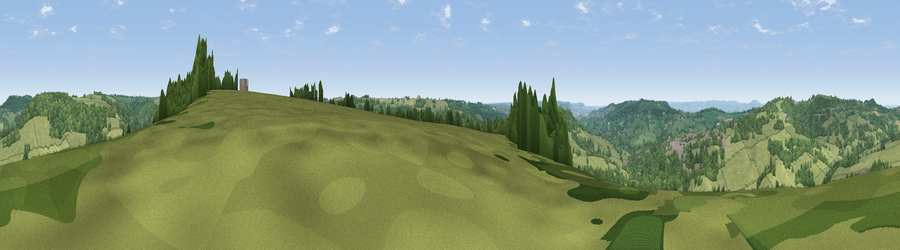

Viewpoint near Sheepscombe
#18128 in England · top 35% of its area beats it · near SheepscombeWhere it is
The exact computed spot (SO 88375 09675). Click the marker for map links.
The view, rendered

A 360° render of this exact spot computed from the terrain model, tree cover and land cover — summer colours, afternoon light, calibrated against photographs of famous viewpoints. Real trees, hedges and buildings will differ in detail.
The panorama
Grey silhouette: terrain skyline in each direction (720 bearings, Earth curvature and refraction included). Dashed green: skyline with trees (+15 m) and buildings (+8 m) as obstacles. Blue strip: how far the ground is visible on each bearing.
Where the view opens
Wedge length = distance to the farthest visible ground on that bearing (vegetation-aware). Rings at 10, 25 and 50 km.
What fills the view
64% grassland · 33% woodland · 2% built-up · 2% cropland
Angular shares of the visible panorama (visual magnitude), not map area. Landscape diversity 0.34 (0–1 Shannon).
Key numbers
More beautiful places nearby
The staircase of upgrades: each row has a higher view potential than everything closer. Driving times are estimates from straight-line distance, calibrated against real road routing — check an actual route before setting out.
| Place | Direction | Drive | Score |
|---|---|---|---|
| Viewpoint near Slad | S · 3 km | ~7 min | 55.8 |
| Painswick Beacon | NNW · 3 km | ~7 min | 79.6 |
| Viewpoint near Great Witcombe | N · 5 km | ~11 min | 80.5 |
| Nottingham Hill | NNE · 21 km | ~35 min | 80.9 |
| Chase End Hill | NNW · 29 km | ~45 min | 81.5 |
| Ragged Stone Hill | NNW · 29 km | ~46 min | 82.5 |
| Midsummer Hill | NNW · 30 km | ~48 min | 83.0 |
| Millennium Hill | NNW · 32 km | ~50 min | 86.9 |
51.78561, -2.16993 · source: screening · position refined by local search. Computed location — check access rights before visiting.